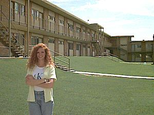

Women's Residences |
|
The women's residence halls consist of four cooking style and two cafeteria halls. In the cooking style rooms, students share the cost of food, do their own cooking and furnish their own dishes, cooking utensils, etc. Four women share a furnished two-bedroom, apartment with kitchen and dining area. The cafeteria style are three bedroom apartments with a living room, microwave, refrigerator, and double sink bathroom. Six women share each furnished apartment. Lounges, fenced courtyards and coin-operated laundry facilities are available. |
 |